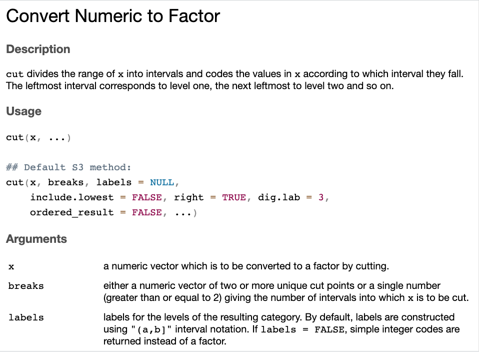
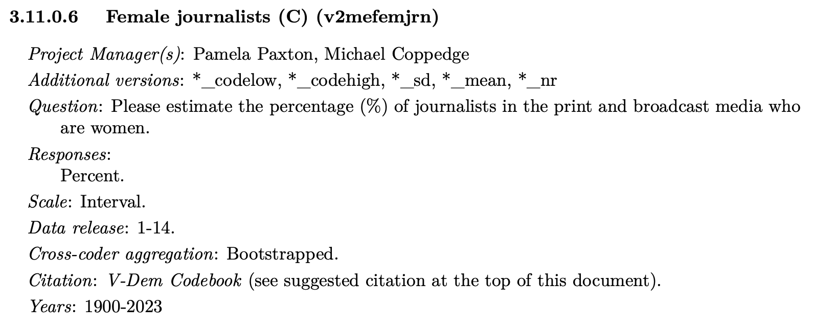
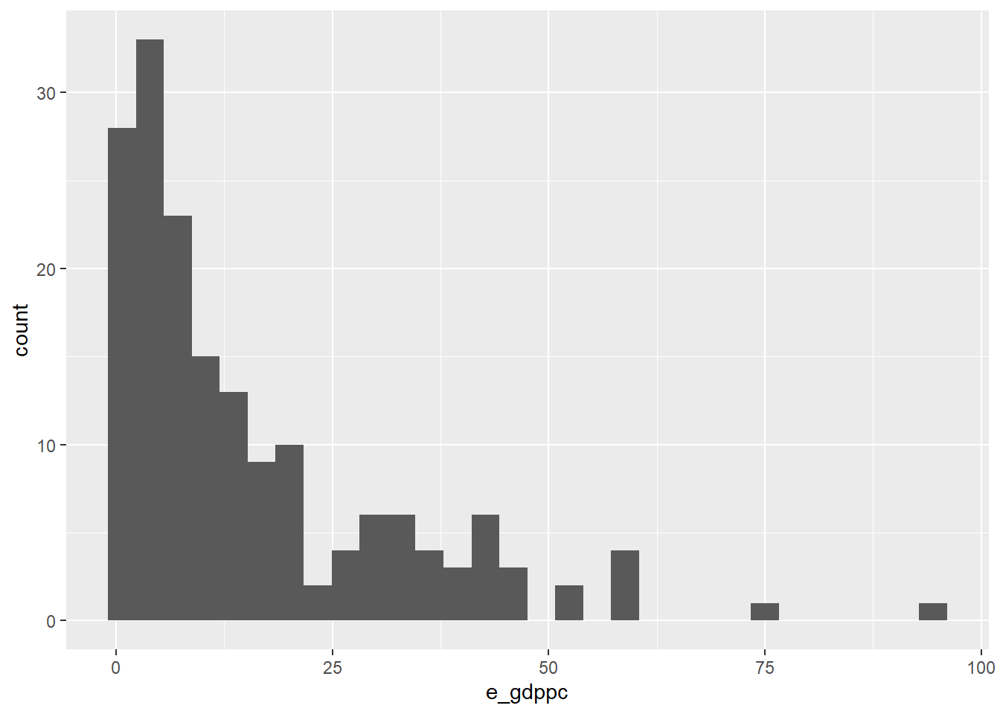

Chapter 7 Crosstabs using continuous variables
- Goals for today’s class:
- Transforming continuous variables into ordinal variables
- Creating and saving crosstab
7.2 VDem
Load Data
vars <- c("country_name", "country_id", "year",
"v2x_libdem","e_gdppc","v2mefemjrn", "v2pepwrgen")
vdem_selected <- read.csv("Project/VDem/VDem_post2000.csv") |>
select(all_of(vars)) |>
filter(year==2010) - Variables selected:
v2x_libdem: Liberal democracy indexe_gdppc: GDP per capitav2mefemjrn: % of female journalistv2pepwrgen: Power distributed by gender
Create ordinal categories using function cut()

Consider this variable: v2mefemjrn (% of female journalists)

## [1] 36.857 39.000 50.294 40.167 36.406 42.688cut(vdem_selected$v2mefemjrn, # numeric variable
breaks=4) |> # either number of intervals OR list of cut points
head()## [1] (24.4,38.5] (38.5,52.5] (38.5,52.5] (38.5,52.5] (24.4,38.5] (38.5,52.5]
## Levels: (10.3,24.4] (24.4,38.5] (38.5,52.5] (52.5,66.7]cut(vdem_selected$v2mefemjrn, # numeric variable
breaks=c(10,30,50,70)) |> # either number of intervals OR list of cut points
head()## [1] (30,50] (30,50] (50,70] (30,50] (30,50] (30,50]
## Levels: (10,30] (30,50] (50,70]Crosstabs
tab_xtab(var.row = crosstab$v2mefemjrn_ord4,
var.col = crosstab$v2pepwrgen_ord4,
show.col.prc = TRUE)| v2mefemjrn_ord4 | v2pepwrgen_ord4 | Total | |||
|---|---|---|---|---|---|
| (-1.97,-0.622] | (-0.622,0.724] | (0.724,2.07] | (2.07,3.42] | ||
| (10.3,24.4] |
8 50 % |
8 18.6 % |
11 11.5 % |
1 4.3 % |
28 15.7 % |
| (24.4,38.5] |
7 43.8 % |
22 51.2 % |
37 38.5 % |
2 8.7 % |
68 38.2 % |
| (38.5,52.5] |
1 6.2 % |
11 25.6 % |
40 41.7 % |
18 78.3 % |
70 39.3 % |
| (52.5,66.7] |
0 0 % |
2 4.7 % |
8 8.3 % |
2 8.7 % |
12 6.7 % |
| Total |
16 100 % |
43 100 % |
96 100 % |
23 100 % |
178 100 % |
χ2=39.809 · df=9 · Cramer’s V=0.273 · Fisher’s p=0.000 |
Export table
tab_xtab(var.row = crosstab$v2mefemjrn_ord4,
var.col = crosstab$v2pepwrgen_ord4,
show.col.prc = TRUE,
file="crosstabs.html")| v2mefemjrn_ord4 | v2pepwrgen_ord4 | Total | |||
|---|---|---|---|---|---|
| (-1.97,-0.622] | (-0.622,0.724] | (0.724,2.07] | (2.07,3.42] | ||
| (10.3,24.4] |
8 50 % |
8 18.6 % |
11 11.5 % |
1 4.3 % |
28 15.7 % |
| (24.4,38.5] |
7 43.8 % |
22 51.2 % |
37 38.5 % |
2 8.7 % |
68 38.2 % |
| (38.5,52.5] |
1 6.2 % |
11 25.6 % |
40 41.7 % |
18 78.3 % |
70 39.3 % |
| (52.5,66.7] |
0 0 % |
2 4.7 % |
8 8.3 % |
2 8.7 % |
12 6.7 % |
| Total |
16 100 % |
43 100 % |
96 100 % |
23 100 % |
178 100 % |
χ2=39.809 · df=9 · Cramer’s V=0.273 · Fisher’s p=0.000 |
For your final project, open the html file on your laptops and copy the table into your word document
Skewed variables

Crosstabs will not display well
crosstab2 <- vdem_selected |>
mutate(e_gdppc_ord4 = cut(e_gdppc,
breaks = 4),
v2x_libdem_ord4 = cut(v2x_libdem,
breaks = 4))
tab_xtab(var.row = crosstab2$e_gdppc_ord4,
var.col = crosstab2$v2x_libdem_ord4,
show.col.prc = TRUE)| e_gdppc_ord4 | v2x_libdem_ord4 | Total | |||
|---|---|---|---|---|---|
| (0.00411,0.227] | (0.227,0.45] | (0.45,0.672] | (0.672,0.895] | ||
| (0.577,24.1] |
49 89.1 % |
44 95.7 % |
29 90.6 % |
11 27.5 % |
133 76.9 % |
| (24.1,47.5] |
4 7.3 % |
0 0 % |
3 9.4 % |
25 62.5 % |
32 18.5 % |
| (47.5,71] |
1 1.8 % |
2 4.3 % |
0 0 % |
3 7.5 % |
6 3.5 % |
| (71,94.5] |
1 1.8 % |
0 0 % |
0 0 % |
1 2.5 % |
2 1.2 % |
| Total |
55 100 % |
46 100 % |
32 100 % |
40 100 % |
173 100 % |
χ2=77.469 · df=9 · Cramer’s V=0.386 · Fisher’s p=0.000 |
Alternative using quantile cut points
## 0% 25% 50% 75% 100%
## 0.671 3.315 8.971 20.720 94.400crosstab3 <- vdem_selected |>
mutate(e_gdppc_ord4 = cut(e_gdppc,
breaks = quantile(e_gdppc, probs = seq(0, 1, 0.25),na.rm=T)),
v2x_libdem_ord4 = cut(v2x_libdem,
breaks = quantile(v2x_libdem, probs = seq(0, 1, 0.25),na.rm=T)))
tab_xtab(var.row = crosstab3$v2x_libdem_ord4,
var.col = crosstab3$e_gdppc_ord4,
show.col.prc = TRUE)| v2x_libdem_ord4 | e_gdppc_ord4 | Total | |||
|---|---|---|---|---|---|
| (0.671,3.31] | (3.31,8.97] | (8.97,20.7] | (20.7,94.4] | ||
| (0.005,0.157] |
12 27.9 % |
13 30.2 % |
9 21.4 % |
7 16.3 % |
41 24 % |
| (0.157,0.373] |
18 41.9 % |
12 27.9 % |
9 21.4 % |
2 4.7 % |
41 24 % |
| (0.373,0.66] |
13 30.2 % |
15 34.9 % |
13 31 % |
3 7 % |
44 25.7 % |
| (0.66,0.894] |
0 0 % |
3 7 % |
11 26.2 % |
31 72.1 % |
45 26.3 % |
| Total |
43 100 % |
43 100 % |
42 100 % |
43 100 % |
171 100 % |
χ2=74.710 · df=9 · Cramer’s V=0.382 · p=0.000 |